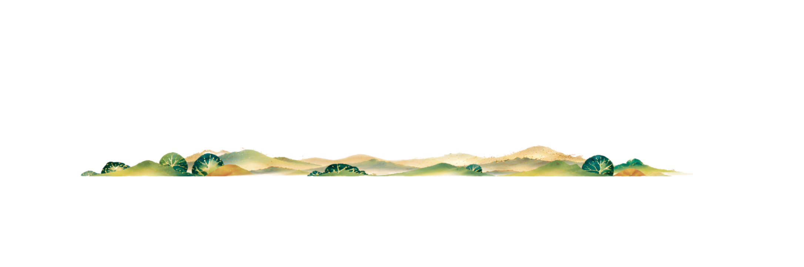
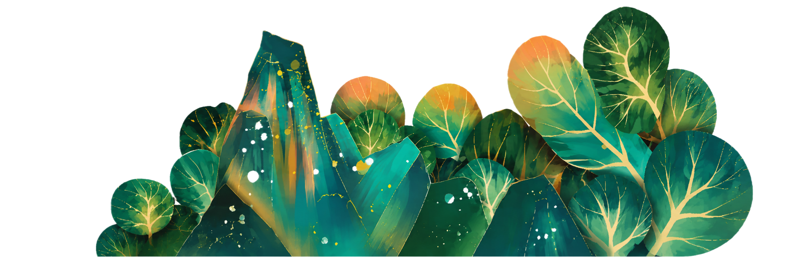
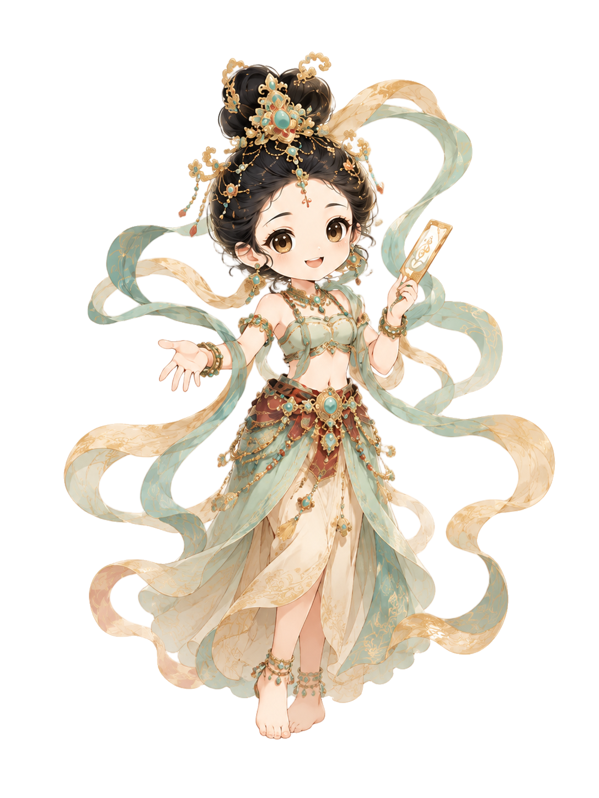

石窟洞窟
2415个

✺
敦煌·拾光
DUNHUANG CULTURE
⌕

敦小妞 Lv.6寻迹千年
敦煌溯源
Tracing the Story of Dunhuang
文化总览
千年敦煌
人类瑰宝
敦煌，是东西方文化交汇的重要明珠。这里见证了千年文明的交流与传承， 留下了人类共同的精神财富。
历时营建
千余年壁画面积
45,000m²文化珍藏
1987万+件
01
历史变革
沿着丝路长卷，回望敦煌从开凿、繁盛到保护传承的千年轨迹。
02
艺术瑰宝
以壁为卷，以色写史
经变画、供养人、飞天与装饰图案共同构成敦煌艺术的视觉宇宙。
经变画
供养人像
飞天
装饰图案
04
丝绸之路
连接东西方的文明之路，也是敦煌成为文化汇聚之地的重要原因。
威尼斯
巴格达
撒马尔罕
安西
敦煌
龟兹
楼兰
于阗
长安
查看丝路故事 →
05
保护修复
从环境监测到数字采集，从人工修复到国际合作，守护千年瑰宝。
环境监测与风险预警
先进技术守护石窟
壁画彩塑修复实践
专业人才培养体系
全球协作与经验交流
06
当代价值
让敦煌文化照亮未来，让传统审美进入当代生活。
文化传承弘扬中华优秀传统文化
学术研究多学科研究与新发现
文旅融合文化旅游与美学体验
创意产业文创设计与生活美学
国际交流文明互鉴与世界对话
敦煌是全人类的共同财富，保护好、研究好、利用好，是我们共同的责任。 —— 敦煌研究院
保护传承敦煌文化，让历史文脉在新时代焕发光彩。 —— 习近平总书记相关论述
以数字技术连接古今，让丝路文明被更多人看见、理解与热爱。 —— 数字敦煌